核心思想：利用 VIX 恐慌指数的极端飙升与标普 500 周线 RSI 的结构性超卖，在市场最恐慌的时刻买入 3 倍做多纳指 ETF（TQQQ），并耐心持有，吃完整轮复苏行情。所谓「别人恐惧我贪婪」。
按期末净值排序；Alpha / Beta 以「买入持有 TQQQ」为基准计算。
| 策略 | 期末净值 | 总收益 % | 年化 % | 最大回撤 % | 夏普 | Alpha | Beta |
|---|---|---|---|---|---|---|---|
| VIX40 策略 (TQQQ) | $3,623,260 | 36,132.6 | 43.33 | -61.57 | 0.97 | 0.11 | 0.69 |
| 买入并持有 TQQQ | $3,485,958 | 34,759.6 | 42.99 | -81.66 | 0.90 | -0.00 | 1.00 |
策略在每一个维度上均跑赢裸持 TQQQ：期末净值更高（$3.62M vs $3.49M）、年化更高（43.3% vs 43.0%）、最大回撤显著更小（-62% vs -82%）、夏普更高（0.97 vs 0.90），且 Beta 仅 0.69、Alpha 为正。2026 年 TQQQ 大幅反弹使净值差距收窄，但风险调整后的优势依然稳固——用更小的风险敞口换来更高的回报。
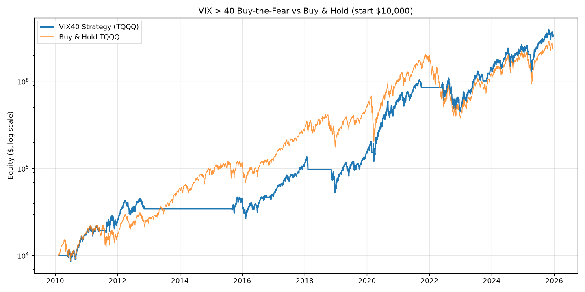
纵轴为对数坐标（起始 $10,000）。策略大部分时间持有现金，仅在恐慌后入场——因此曲线呈阶梯状上涨，并在 2018、2020、2022 等大跌中避开了裸持 TQQQ 的深度回撤。
信号日 = 条件触发当日（收盘）；入场日 = 其后第 9 个交易日的收盘，实际买入点；触发原因列出当日的条件与数值。
| # | 信号日 | 入场日 | 触发原因 | 买入价 | 卖出日 | 卖出价 | 收益 % | 持有天数 | 期末资金 |
|---|---|---|---|---|---|---|---|---|---|
| 1 | 2010-05-07 | 2010-05-20 | VIX 41.0 > 40 | 0.21 | 2011-06-01 | 0.41 | +94.3 | 377 | $19,427 |
| 2 | 2011-08-05 | 2011-08-18 | RSI 28.0 < 35 | 0.28 | 2012-11-07 | 0.49 | +77.2 | 447 | $34,429 |
| 3 | 2015-08-21 | 2015-09-03 | RSI 29.4 < 35 | 1.82 | 2016-10-11 | 2.48 | +35.9 | 404 | $46,804 |
| 4 | 2016-11-04 | 2016-11-17 | RSI 30.7 < 35 | 2.47 | 2018-02-08 | 5.16 | +108.8 | 448 | $97,727 |
| 5 | 2018-10-26 | 2018-11-08 | RSI 34.9 < 35 | 6.73 | 2020-02-25 | 10.50 | +56.0 | 474 | $152,450 |
| 6 | 2020-02-28 | 2020-03-12 | VIX 40.1 > 40 | 5.34 | 2021-09-30 | 29.75 | +456.6 | 567 | $848,556 |
| 7 | 2022-05-13 | 2022-05-26 | RSI 30.6 < 35 | 14.48 | 2023-09-21 | 17.30 | +19.5 | 483 | $1,014,081 |
| 8 | 2023-10-20 | 2023-11-02 | RSI 32.6 < 35 | 17.64 | 2025-02-27 | 35.47 | +101.0 | 483 | $2,038,371 |
| 9 | 2025-03-14 | 2025-03-27 | RSI 32.0 < 35 | 30.93 | 2026-03-27 | 38.78 | +25.4 | 365 | $2,555,399 |
| 10 | 2026-03-30 | 2026-04-13 | RSI 28.2 < 35 | 50.66 | 持仓中 2026-06-26 | 71.83 | +41.8 | 74 | $3,623,260 |
* 第 10 笔在回测结束时仍在持仓——持有 74 天（< 365 天最低持有期），出场条件尚未满足，按最后收盘价做市值估算。
每张图为日线三联面板：上方为 TQQQ 日 K 线，标注信号日（橙色虚线）、买入点（绿色 ▲）与卖出点（红色 ▼）及收益；中、下两栏同时展示两个触发指标——VIX（含 40 线）与标普 500 周线 RSI(14)（含 35 线），红色阴影标出越过阈值的区域（无论该笔由哪个条件触发）。仍持仓的交易默认显示自买入起 1 年的时间窗（含「1 年最低持有」参考线）。由最新交易至最早交易排列。
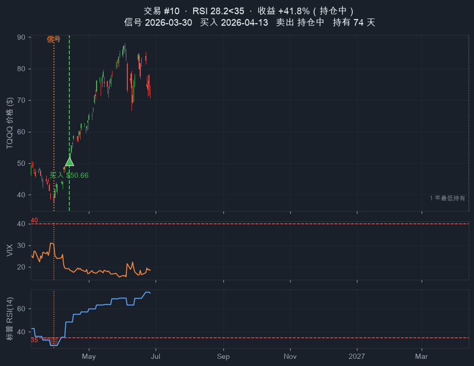
#10 · 2026 年 3 月底回调（SMA RSI 28.2 触发）· 买入 $50.66 · +41.8% · 持仓中，期末资金 $3,623,260。
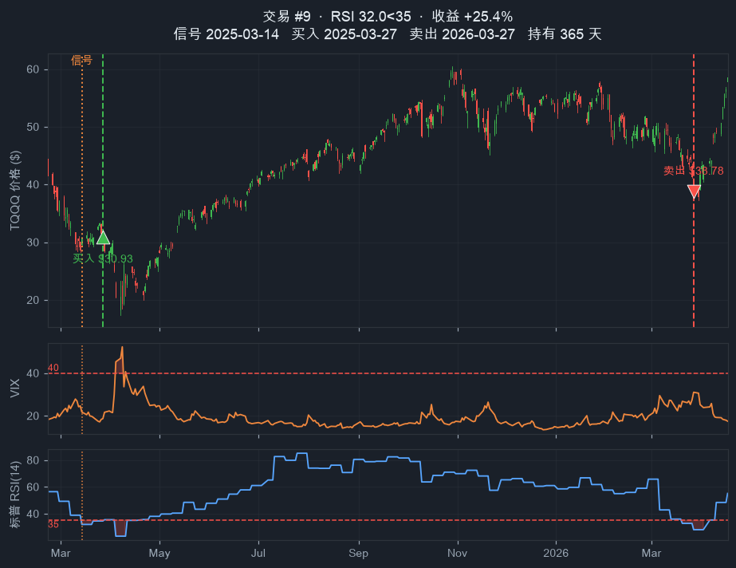
#9 · 2025 年 3 月回调（关税冲击，RSI 32.0）· 满 1 年后于 2026-03-27 标普跌破 MA100 平仓 · +25.4% · 期末资金 $2,555,399。
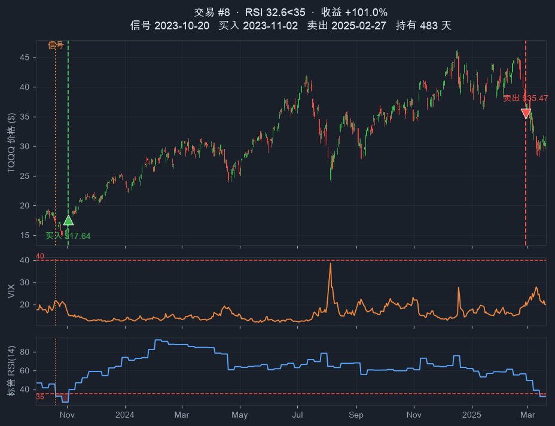
#8 · 2023 年秋季回调（RSI 32.6，Wilder 平滑会漏掉）· 买入 $17.64 → 卖出 $35.47 · +101.0% · 期末资金 $2,038,371。
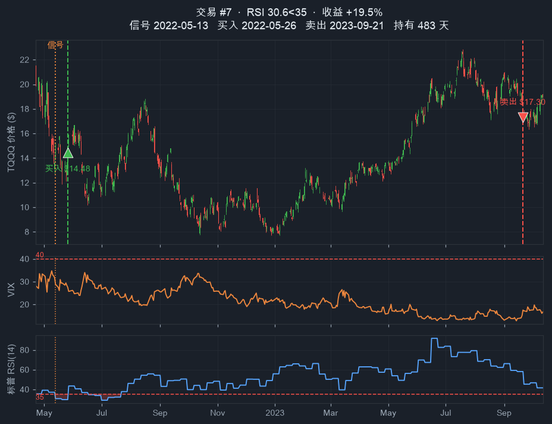
#7 · 2022 加息熊市（RSI 30.6）· 买入 $14.48 → 卖出 $17.30 · +19.5% · 期末资金 $1,014,081。
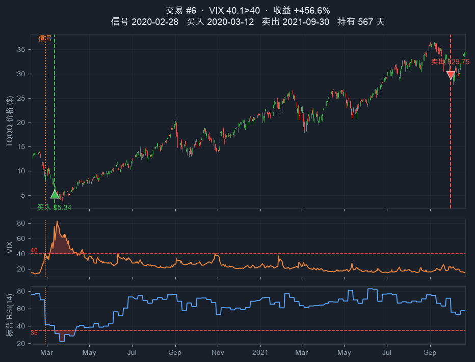
#6 · 2020 新冠崩盘（VIX 飙至 80+）· 抄底 $5.34 → 卖出 $29.75 · +456.6% · 全期最大赢家，期末资金 $848,556。
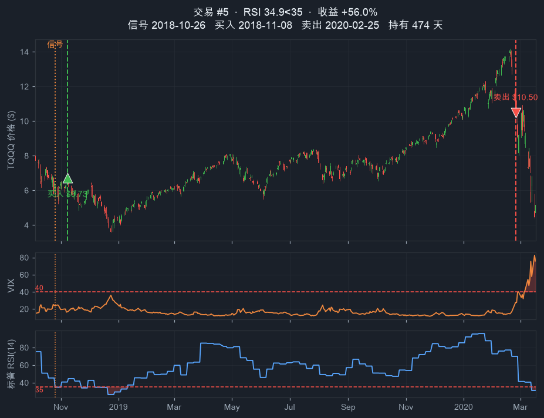
#5 · 2018 美联储加息抛售（RSI 34.9，险触阈值）· 买入 $6.73 → 卖出 $10.50 · +56.0% · 期末资金 $152,450。
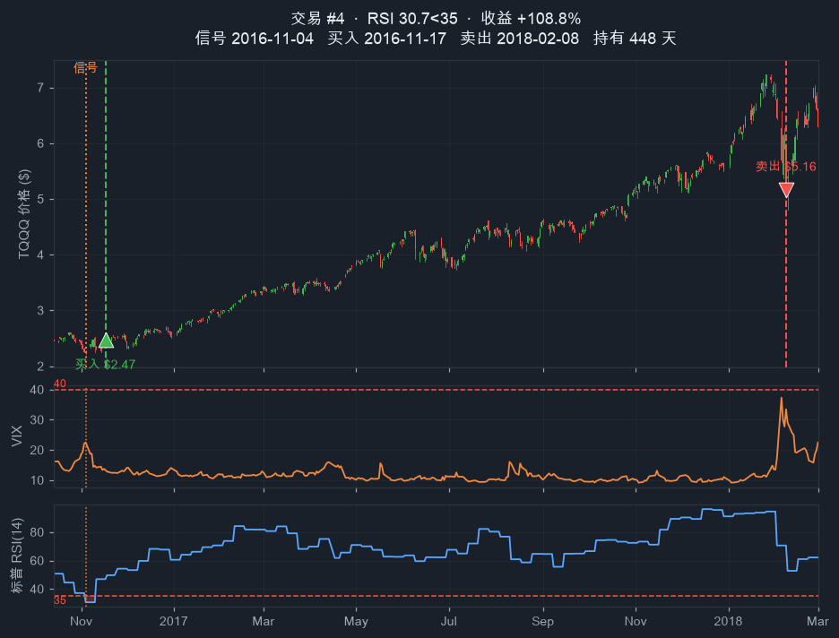
#4 · 2016 年中调整（RSI 30.7）· 买入 $2.47 → 卖出 $5.16 · +108.8% · 期末资金 $97,727。
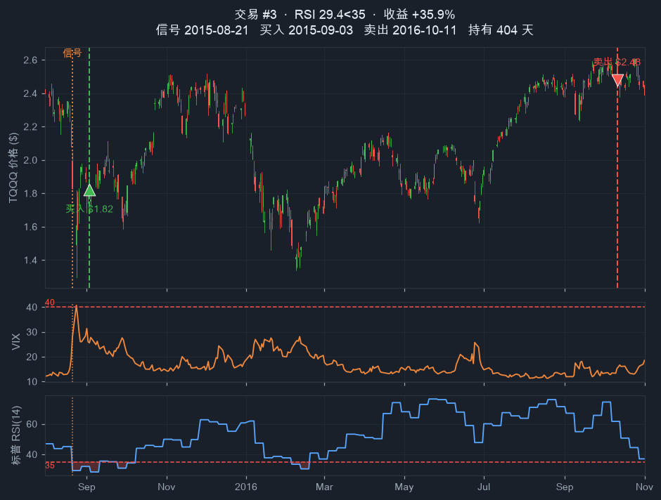
#3 · 2015 中国汇改（RSI 29.4）· 买入 $1.82 → 卖出 $2.48 · +35.9% · 期末资金 $46,804。
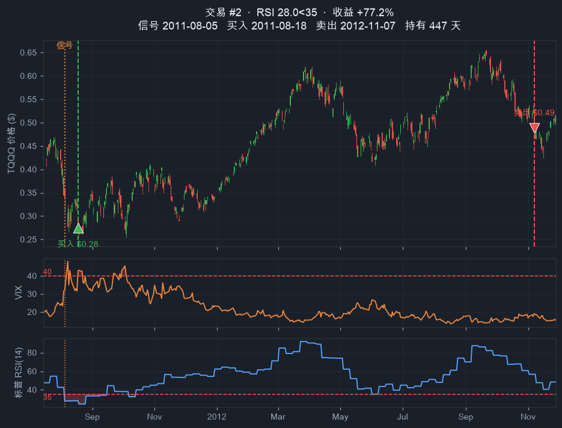
#2 · 2011 美债降级（RSI 28.0）· 买入 $0.28 → 卖出 $0.49 · +77.2% · 期末资金 $34,429。
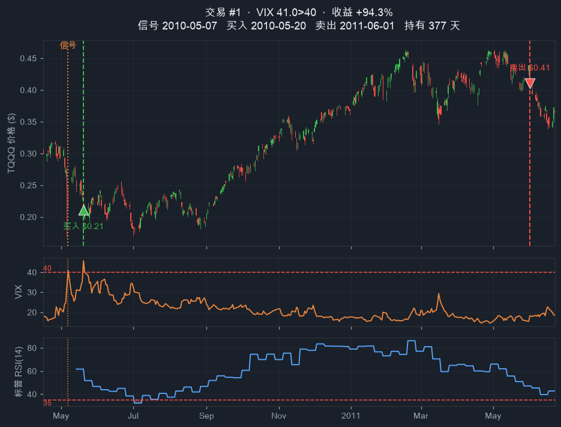
#1 · 2010 闪崩（VIX 41.0>40，唯一非 RSI 首发信号之一）· 买入 $0.21 → 卖出 $0.41 · +94.3% · 期末资金 $19,427。
rolling(window=14).mean() 的简单移动平均（非 Wilder 指数平滑）。$10,000 × (期末收盘 / 期初收盘) 计算 TQQQ 裸持净值。